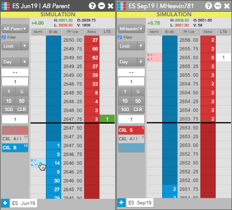
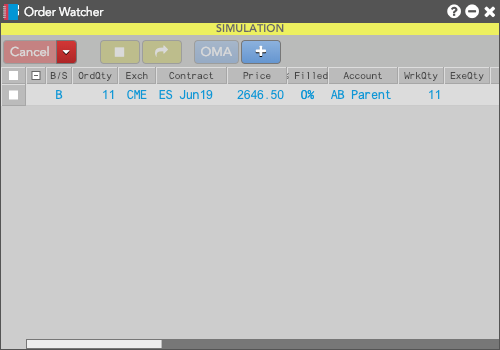
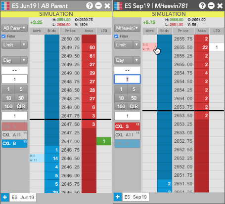
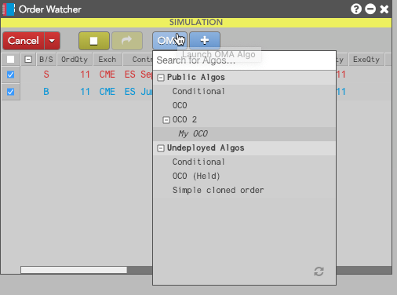
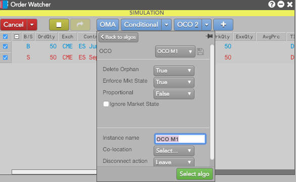
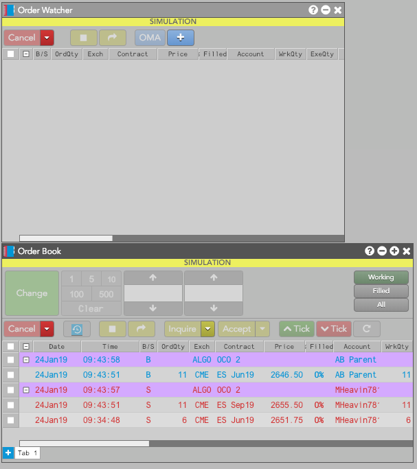

To build an OMA algo from existing orders in MD Trader widgets:
-
Use Shift-right-click on an existing order in an MD Trader to open Order Watcher and add the order to the widget.

The selected order is added to the widget.

-
Use shift-right-click on an another existing order in the same or another MD Trader.

The selected order is added to the widget.

Note: You can continue selecting orders to add them to Order Watcher.
-
In Order Watcher, select the individual orders you want to use in your OMA algo.

-
Click the desired algo button.

-
Update algo parameters, if desired, and click Select algo.
The selected orders are removed from Order Watcher and the selected algo appears in the Order Book.
